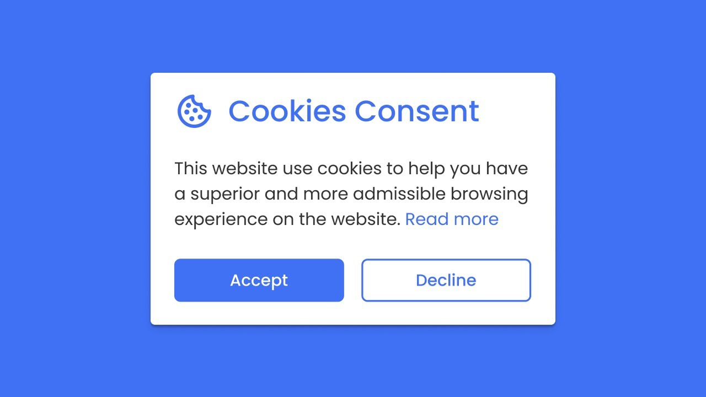
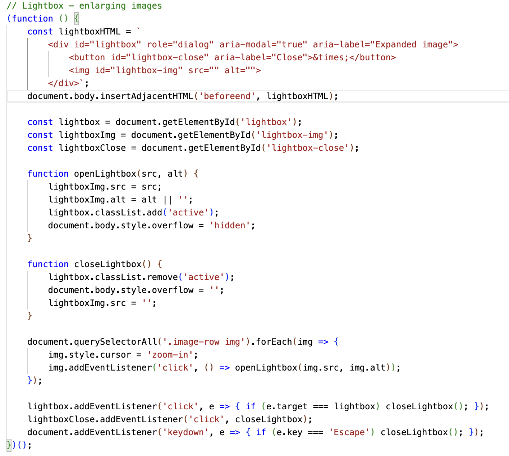
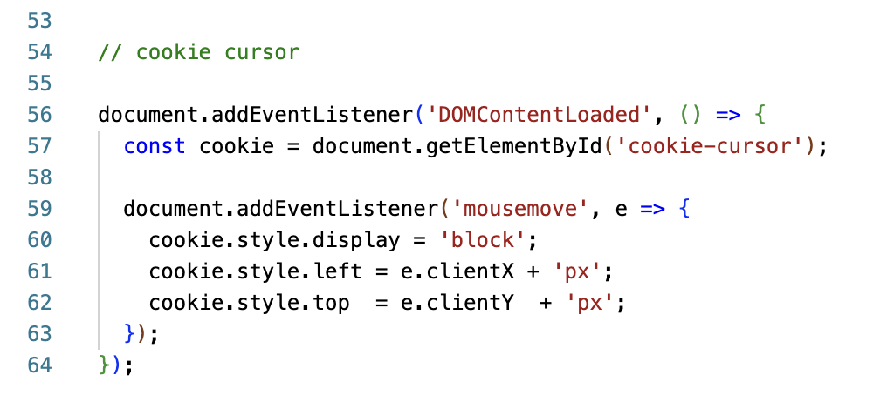

About the Blog
This project was created as part of a final year submission, in the module "What is work in a digital world?".
The blog is entirely hard-coded using HTML, CSS, and JavaScript. It was originally designed as a single-page website with all blog posts listed sequentially. However, the current structure—featuring an index page and separate individual blog pages—proved to be more effective for organising the content. On the index page, hover states are used to indicate which blog entry the user is selecting, following a common convention seen on many websites.
Each individual blog article page uses text, imagery, and a reference list to document my work on either the weekly tasks or the visual essay production (from week 6 onwards). These pages also implement a JavaScript lightbox feature, allowing users to enlarge and view images that are otherwise shown as previews. This technique is particularly useful as it removes the need to resize images into different containers.
That's how the cookie crumbles
As an additional gimmick I chose to make the cursor display as a cookie on the index page.
See code snapshots below for how I coded these 2 key Javascript features.

